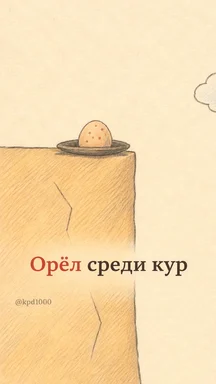
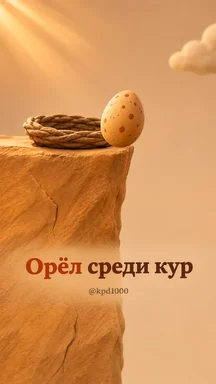
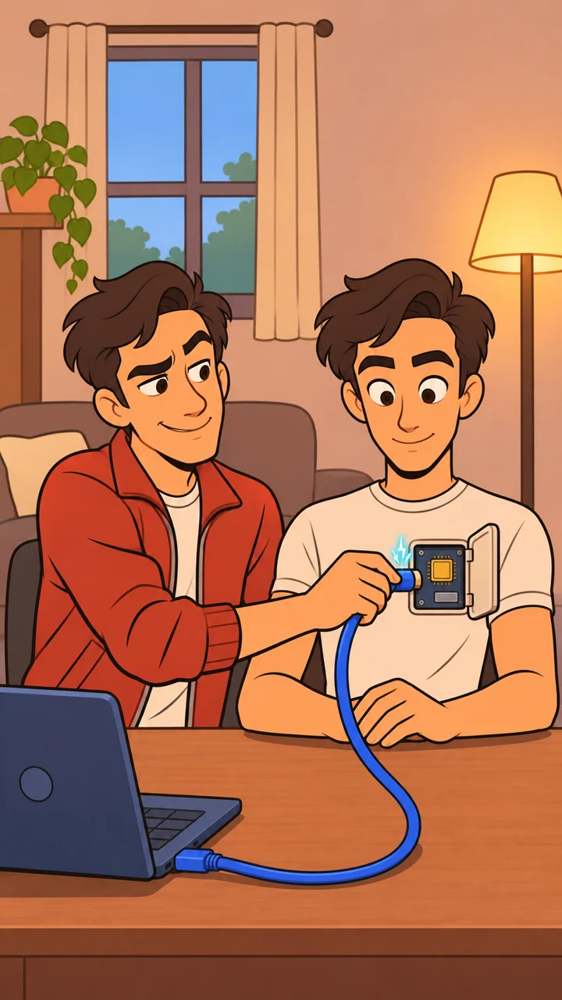
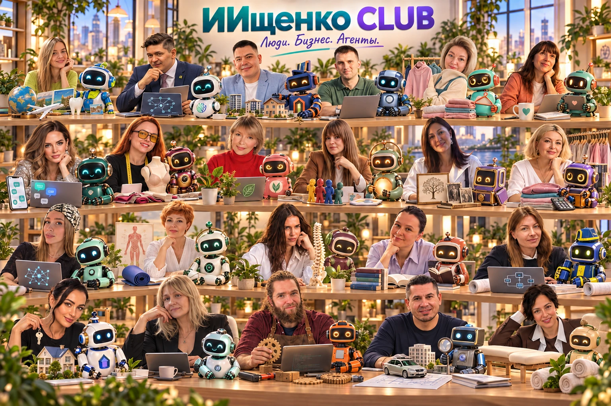
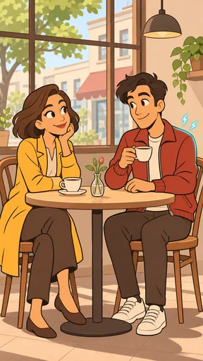
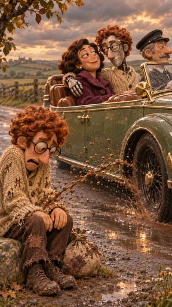

БЕСПЛАТНАЯ ИНСТРУКЦИЯ
Снимите свой первый ИИ-мультик
Пришли после «Орла среди кур»? Начните с одной сцены. Скачайте готовый кадр, оживите его по промпту и получите вертикальный MP4 на 5 секунд.
Инструкция и промпты бесплатные. Стоимость генерации видна перед запуском.
ОДНА ИСТОРИЯ · ДВА СТИЛЯ
Орёл среди кур


Сделайте первую сцену за три шага
Подготовьте кадр 9:16, запустите одно движение и скачайте MP4. На одну удачную попытку мы закладываем около 20 минут. Вход и очередь могут занять больше времени.
-
КАДР · 4 МИНУТЫ
Возьмите готовый кадр или сделайте свой

Пробная сцена. Герой подключает двойника. Вспыхивает искра, двойник поднимает взгляд.
Скачать кадр JPGПосмотреть результат в Kling
Хотите нарисовать кадр сами? Вставьте первый промпт в ChatGPT и скачайте картинку. Для своей идеи возьмите второй промпт. Он работает в ChatGPT и Claude.
Нарисовать кадр в ChatGPT
Создай одно вертикальное изображение 9:16 для короткого рисованного мультфильма. Тёплая комната. За столом сидят двое с одинаковыми лицами и тёмными волосами. Слева герой в красной куртке, справа его двойник в белой футболке. Герой держит синий штекер у разъёма на груди двойника, сам разъём и рука хорошо видны. Двойник смотрит на разъём. Это кадр перед движением. Средний план, выразительные лица, тёплый свет, без надписей и логотипов. Создай изображение сейчас.Придумать свою сцену в ChatGPT или Claude
Помоги снять первый вертикальный ИИ-мультфильм на 5 секунд. Моя идея: [напишите свою идею или оставьте пример: человек включает своего двойника, и тот оживает]. За один ответ дай 1) сюжет в одном предложении, 2) готовый промпт для создания начального кадра в ChatGPT, 3) отдельный промпт для движения в Kling до 400 знаков и 4) одну короткую подпись к публикации. Один план, одно главное действие и видимая реакция. Никаких смен камеры и реплик. В промпте для картинки опиши позу перед началом действия, укажи 9:16 и попроси создать изображение сразу. В промпте для видео сохрани внешность и фон. Сначала дай готовый вариант, без уточняющих вопросов. -
SYNTX · 4 МИНУТЫ НА ЗАПУСК
Оживите кадр в Kling
Скопируйте промпт для примера или возьмите свой промпт движения из первого шага.
Готовый промпт движения для Kling
Вертикальное видео 9:16, одна сцена. Сохрани обоих героев, их одежду, свет и фон. Камера неподвижна. Левый герой подводит синий штекер к разъёму на груди двойника. При контакте коротко вспыхивает голубая искра. Двойник моргает и поднимает взгляд к герою. В конце оба на секунду замирают. Сохрани форму рук и кабеля. Без склеек, речи и текста.Открыть Syntx Для первого ролика хватит Basic на месяц. В тариф входит Kling.- Войдите в Syntx. Если токенов не хватает, откройте «Тарифы», выберите Basic → 1 месяц и проверьте сумму перед оплатой.
- Откройте «Видео» → «Kling» → «Картинка в видео» (Image to Video). Нажмите «Загрузить файл» и добавьте JPG или PNG как начальный кадр. Вставьте промпт. Поставьте 5 секунд и 720p. Если есть выбор формата, поставьте 9:16.
- Проверьте стоимость рядом с кнопкой запуска и запустите одну генерацию. Наша проба на этом кадре стоила 25 токенов и заняла около 4 минут. В расчёте на ожидание заложили 9 минут.
-
СКАЧИВАНИЕ · 3 МИНУТЫ
Сохраните ролик и посмотрите на телефоне
Нажмите «Скачать» на готовом клипе и один раз посмотрите его без звука. Если что-то смущает, запишите одну конкретную правку и проверьте стоимость нового дубля.
- С первой секунды видно, кто и что делает.
- Герой остаётся узнаваемым, руки и предметы сохраняют форму.
- Движение доходит до видимого результата, например до контакта или реакции.

Промпты для следующего ролика
Откройте нужный промпт, скопируйте его и замените поля в квадратных скобках. Если промпт просит приложить кадр или клип, добавьте его в тот же чат.
Сохранить героя в разных сценах
На выходе — описание героя и четыре согласованных запроса на кадры.
Помоги подготовить вертикальный мультфильм. Моя идея — [одна фраза]. Эталон героя приложу или опишу [здесь]. Выпиши 5 признаков, которые должны совпадать в каждой сцене. Укажи силуэт, лицо, цвет, одежду или отметины и материал. Затем предложи 4 сцены. Для каждой дай начальный кадр 9:16 и отдельный запрос на одно движение с видимой реакцией. Повтори описание героя дословно в каждом запросе на кадр. Если нужен образец описания, возьми глиняного орлёнка с коричневыми перьями и жёлтым клювом.Исправить один неудачный дубль
На выходе — короткий запрос для повторной генерации и один критерий проверки.
Вот начальный кадр [приложите] и проблема в дубле [опишите с таймкодом]. Напиши короткий новый промпт для «Картинка в видео». Сохрани героя, фон, освещение и положение камеры. Покажи подготовку, само движение и его видимый результат. Исправляй только указанную проблему. Например, на второй секунде лапы орла скользят. Орёл сгибает лапы, отталкивается от земли, один раз взмахивает крыльями и мягко возвращается на землю. Отдельно укажи, по какому признаку я пойму, что правка сработала.Свести голос, сцены и титры
На выходе — монтажный план с таймкодами.
Составь монтажный план для вертикального ролика по моим материалам. Озвучка с таймкодами — [текст и время фраз]. Мои клипы — [название, длительность, что видно]. В таблице укажи время в ролике, фразу, клип и диапазон, короткий титр и критерий проверки на телефоне. Привяжи каждое действие к реплике. Предложи сокращения только в паузах и повторах. Оставь достаточно времени на чтение титров и финального призыва. Если для точной склейки не хватает данных, отметь место, которое нужно проверить вручную.Написать призыв и сообщение со ссылкой
На выходе — три согласованных текста для ролика, подписи и лички.
Вот моя тема [тема], кому это нужно [зритель] и что я реально отдаю [материал и ссылка]. Кодовое слово [слово], дополнительное поле [например, город]. Напиши одну короткую фразу для финала ролика, последнюю строку подписи к Reels и сообщение в личку со ссылкой. Действие во всех текстах должно совпадать. Сообщение сразу отдаёт обещанный материал. Опирайся на обещание, которое я могу выполнить. В конце опиши один тест с другого аккаунта, чтобы проверить ответ на комментарий и открытие ссылки.ОДИН СЮЖЕТ · ТРИ СТИЛЯ
Две кофейни
Один фрагмент в трёх версиях. 6 секунд, без звука.
ИИЩЕНКО CLUB
Что меняется, когда ролик ведёт агент
Для одной сцены можно взять готовый промпт и пройти три шага выше. Когда сцен становится больше, приходится следить за внешностью героя, версиями файлов, склейками и титрами. В ИИщенко CLUB личный агент в Codex помогает вести эту работу в одном проекте.



Как устроена работа
Что берёте на себя вы
Даёте тему, примеры и материалы. Выбираете стиль, утверждаете голос и финальную версию. Решения о расходах и публикации остаются за вами.
Что берёт на себя агент
Ведёт раскадровку, промпты и правки в одном проекте. Собирает доступные сцены под голос, проверяет ход действия и титры на узком экране. Сохраняет готовый MP4 и подпись, чтобы было с чего продолжить.
Как мы сделали «Орла среди кур»
Собрали одну историю в двух стилях — «Бумажная Япония» и глиняные миниатюры. Евгений записал голос и попросил поправить первый взмах. Агент собрал монтаж под запись, сверил фазы взмаха и проверил титры на узком экране. На выходе получили два MP4, сравнение и подпись для Reels.
Посмотреть глиняную версиюОт просмотра к заявке или покупке
В «Орле» зритель пишет в комментарии «мультфильмы» и свой город. Для этого в ChatPlace настроен ответ в личку со ссылкой на эту инструкцию. Для своего ролика заранее решите, что человек получит по вашей ссылке.
- РоликПоказываем знакомую зрителю задачу и вызываем интерес.
- Переход по ссылкеВедём на полезную инструкцию, в бот или на сайт.
- ПродуктЗритель может попробовать ваш сервис, оставить заявку или купить.
С каким ещё проектом можно прийти
- Исследовать свою родословнуюРазобрать семейные фото и документы. Собрать дерево и сохранить источники для каждой родственной связи.
- Запустить сайт для своего делаСобрать страницу услуги с текстом, примерами работ и понятным способом оставить заявку.
- Наладить работу с заявками и документамиНавести порядок в CRM, подготовить шаблоны писем и собирать документы по списку.
Приходите со своей задачей. Поможем подключить нужные навыки к агенту. Первый результат можно показать на встрече и разобрать вместе с участниками клуба.
Смотреть клуб и условия участия